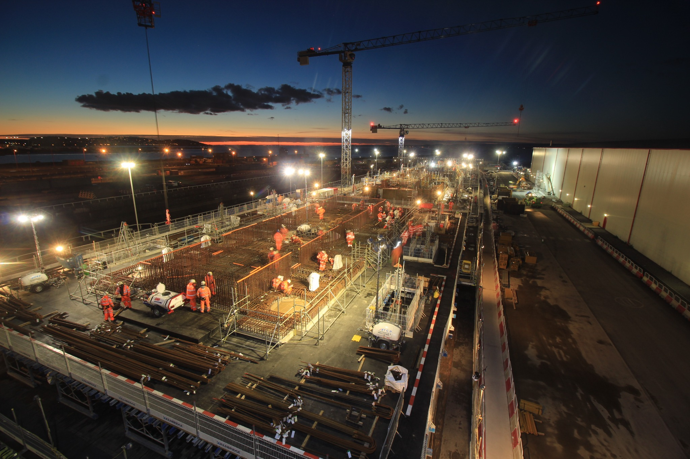

Location
Wood Wharf, Canary Wharf
London

Documenting the construction of floating concrete structures linked by bridges, boardwalks and pontoons within Canary Wharf’s Wood Wharf district.
Kilnbridge were engaged by Canary Wharf Contractors Ltd to construct a pair of floating concrete structures connected by bridges, boardwalks and pontoons, creating a new restaurant destination in the Wood Wharf district.
Create a clear timelapse record of a complex marine-adjacent construction process, showing how the concrete hulls and associated structures were formed over time.
The finished timelapse helped tell the story of a highly unusual construction process and produced strong visual content showcasing both the engineering sequence and the wider destination development.